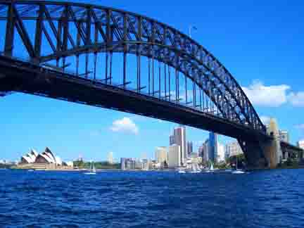
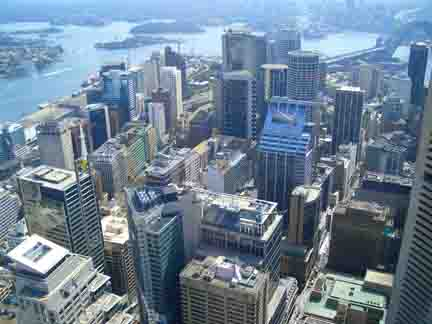
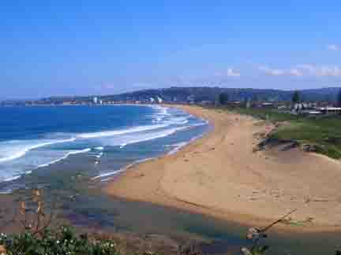
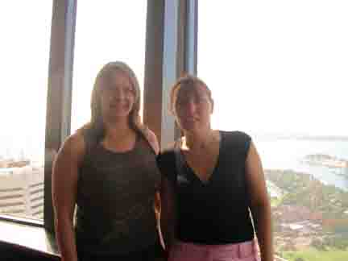

G\'Day from Down Under
Sydney, Australia
Well, here it is finally, what everyone has been waiting for, the news from Down Under!
What can I say? All of you who have been to Sydney already know what a fantastic city it is and all of you that haven’t been, get your butts over here!
There is so much to do, and trust me, I’ve done tons in the last couple of weeks and still won’t have time to do all of it before I move on. The Bridge climb is a MUST (if you are not scared of heights of course…) and so is the Ozz Experience in the Jet Boat that takes you round the Harbour and gets you absolutely soaking wet in the process. There is a really scary bit on the bridge climb called the catwalk which has a see through bottom and makes you feel a bit dizzy, but apart from that it is a breeze really…
The AMP Tower is also a must and I think is pretty much the biggest building in Sydney with rotating restaurants on the top and an observatory deck that gives you a 360 view of Sydney, now that did make me feel a bit dizzy!!
The Opera House looks a bit disappointing close up, not like in the pictures at all. But when you take a picture it looks quiet good…hmmm, don’t quite get that!
I also don’t get why in Paddies Market there are no Paddies but only Chinese people behind the stalls…
Went to Bondi Beach a few days ago and have to say that was definitely a bit of a let down, not what I expected at all. Quite a small beach really, always looks quite big in the pictures. Ah well, still enjoyed it though, laying in the lovely white sand…thinking of you all at home (...haha, maybe not!)
As most of you know my friend Barbra was with me for the first couple of weeks. She has now left me but we did manage to squeeze in a lot of things before she headed home. Apart from all the things above we also went on a camping trip to Narrabeen just outside of Sydney. Luckily we saw no spiders or snakes, well a couple of them but they were tiny. We camped with Barbras friends and their family who made us all feel very welcome. While we were there we went to the ‘Home and Away’ beach but Alf had the afternoon off and couldn’t serve us our snack. And in the evening we put the snags (sausages and not shrimps as I have been told by a ‘real’ Ozzie!) on the Bar-b…and drank some beer.
The following weekend we were invited to stay with Barbra’s friends Kristie and Brenden in Bathurst. They took us to the Blue Mountains for the day were we go to see the 3 Sisters - 3 rocks sticking out which look pretty spectacular. We also went on an ‘Indiana Jones’ ride which was really cool. The notice on the side said something like make sure all umbrellas, bags and infants are not left lying on the side in case they fall out…made us smile anyway (maybe you had to be there..)
And to make you all very jealous, I actually got to stroke a koala…how cute are they!! We also got to feed some kangaroos and had a ‘chat’ with a parrot who said hello and ‘have a cracker’. Needless to say conversation was a bit limited…
Another really cool thing about Sydney is that you can catch a ferry to various places and it is just like catching a bus. I love that!! And there is so much more…but I think you must all be reaching ‘breaking point’ by now so I’ll shut up now.
Just a couple of more things…haha. No, I am not clever enough to have come up with this web site, let alone figure out how to use it. Sue and Nathan have given me thorough instructions and are kind enough to let me use their website. I am staying with Sue and Nathan at the moment and have to say a BIG THANK YOU! They really have looked after me and Barbra.
I am staying in Sydney another few days and am heading off to Uluru on Monday. I am going on a 3 day Outback safari trip and will be camping in the wild. Maybe that is when I’ll meet some of the snakes and spiders, really hope NOT! Then I’ll be heading up to Cairns. I shall send an update in a couple of weeks if I haven’t been eaten by a snake!
Love to you all.
Kerstin
PS If you don't want to get regular updates you have to unsubscribe.
What can I say? All of you who have been to Sydney already know what a fantastic city it is and all of you that haven’t been, get your butts over here!
There is so much to do, and trust me, I’ve done tons in the last couple of weeks and still won’t have time to do all of it before I move on. The Bridge climb is a MUST (if you are not scared of heights of course…) and so is the Ozz Experience in the Jet Boat that takes you round the Harbour and gets you absolutely soaking wet in the process. There is a really scary bit on the bridge climb called the catwalk which has a see through bottom and makes you feel a bit dizzy, but apart from that it is a breeze really…
The AMP Tower is also a must and I think is pretty much the biggest building in Sydney with rotating restaurants on the top and an observatory deck that gives you a 360 view of Sydney, now that did make me feel a bit dizzy!!
The Opera House looks a bit disappointing close up, not like in the pictures at all. But when you take a picture it looks quiet good…hmmm, don’t quite get that!
I also don’t get why in Paddies Market there are no Paddies but only Chinese people behind the stalls…
Went to Bondi Beach a few days ago and have to say that was definitely a bit of a let down, not what I expected at all. Quite a small beach really, always looks quite big in the pictures. Ah well, still enjoyed it though, laying in the lovely white sand…thinking of you all at home (...haha, maybe not!)
As most of you know my friend Barbra was with me for the first couple of weeks. She has now left me but we did manage to squeeze in a lot of things before she headed home. Apart from all the things above we also went on a camping trip to Narrabeen just outside of Sydney. Luckily we saw no spiders or snakes, well a couple of them but they were tiny. We camped with Barbras friends and their family who made us all feel very welcome. While we were there we went to the ‘Home and Away’ beach but Alf had the afternoon off and couldn’t serve us our snack. And in the evening we put the snags (sausages and not shrimps as I have been told by a ‘real’ Ozzie!) on the Bar-b…and drank some beer.
The following weekend we were invited to stay with Barbra’s friends Kristie and Brenden in Bathurst. They took us to the Blue Mountains for the day were we go to see the 3 Sisters - 3 rocks sticking out which look pretty spectacular. We also went on an ‘Indiana Jones’ ride which was really cool. The notice on the side said something like make sure all umbrellas, bags and infants are not left lying on the side in case they fall out…made us smile anyway (maybe you had to be there..)
And to make you all very jealous, I actually got to stroke a koala…how cute are they!! We also got to feed some kangaroos and had a ‘chat’ with a parrot who said hello and ‘have a cracker’. Needless to say conversation was a bit limited…
Another really cool thing about Sydney is that you can catch a ferry to various places and it is just like catching a bus. I love that!! And there is so much more…but I think you must all be reaching ‘breaking point’ by now so I’ll shut up now.
Just a couple of more things…haha. No, I am not clever enough to have come up with this web site, let alone figure out how to use it. Sue and Nathan have given me thorough instructions and are kind enough to let me use their website. I am staying with Sue and Nathan at the moment and have to say a BIG THANK YOU! They really have looked after me and Barbra.
I am staying in Sydney another few days and am heading off to Uluru on Monday. I am going on a 3 day Outback safari trip and will be camping in the wild. Maybe that is when I’ll meet some of the snakes and spiders, really hope NOT! Then I’ll be heading up to Cairns. I shall send an update in a couple of weeks if I haven’t been eaten by a snake!
Love to you all.
Kerstin
PS If you don't want to get regular updates you have to unsubscribe.

Sydney Harbour Bridge (I climbed that!!)

Night time view from Sue and Nathan's flat

Sydney from very high up

Beach at Narrabeen - apparently it was busy...

Home and Away

The three sisters in the Blue Mountains

Barbra and me on top of the world (well the AMP Tower anyway)